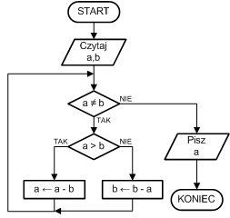

Specyfikacja dla algorytmu Euklidesa.
Dane: Dwie liczby naturalne m i n, m<=n.
Wynik: NWD(m,n) –największy wspólny dzielnik m i n
Schemat blokowy:

Lista kroków:
Krok 1: Czytaj a,b ; wczytujemy dane wejściowe
Krok 2: Jeśli a = b, to idź do kroku 5 ; jeśli a = b, to NWD jest a lub b
Krok 3: Jeśli a > b, to a ← a - b. Inaczej b ← b - a ; jeśli a jest różne od b, to od większej liczby odejmujemy mniejszą
Krok 4: Idź do kroku 2 ; wracamy do sprawdzania warunku w kroku 2
Krok 5: Pisz a ; wypisujemy NWD
Krok 6: Zakończ ; koniec algorytmu